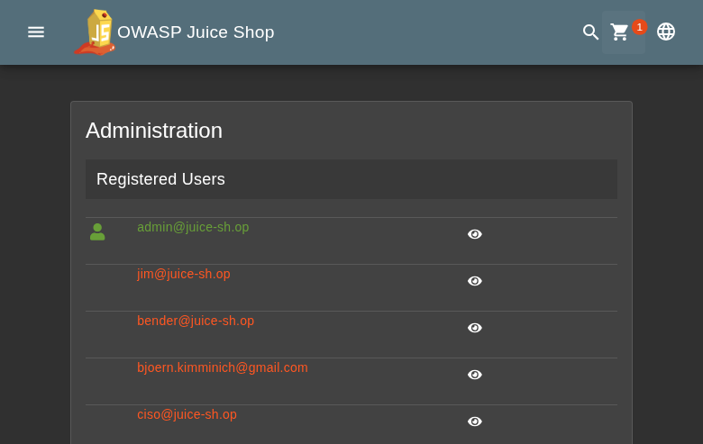
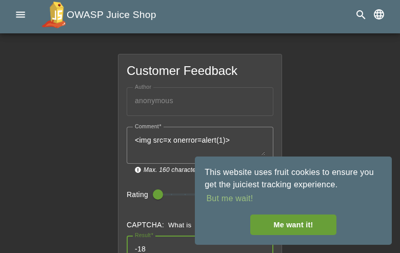
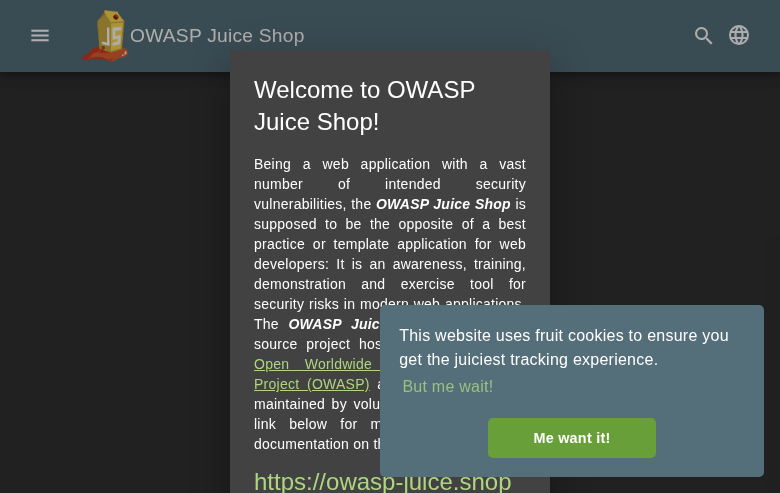
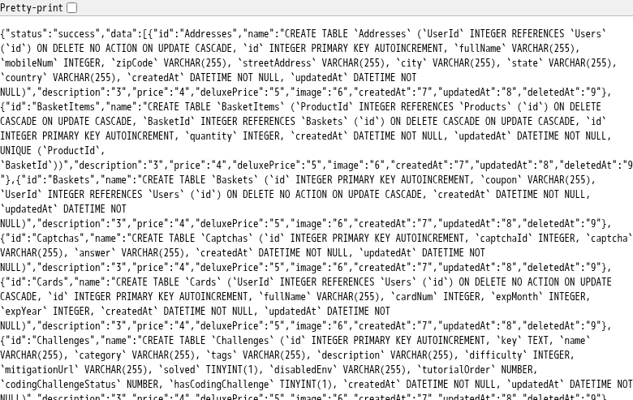
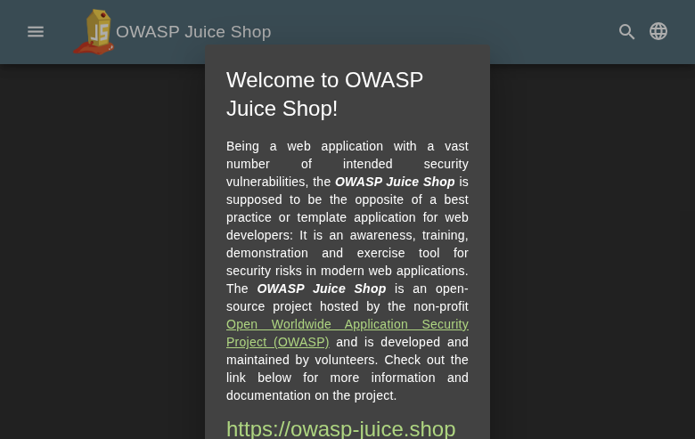
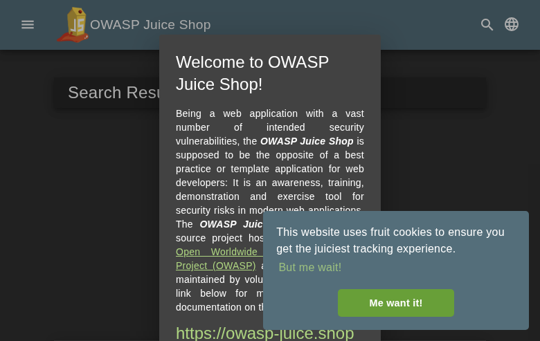
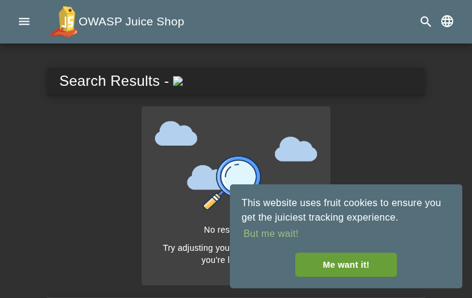

Scope
OpenHack Security Agent was engaged by
Bjoern Kimminich to conduct an external IT security
investigation. The subject of the investigation was the “OWASP Juice
Shop v19.1.1”.
The test was performed using a local instance of the application at
localhost:3333 in a dedicated test environment..
Objective
The objective of the IT security investigation was to identify vulnerabilities and security gaps which, in the event of misuse, would have an impact on the availability, integrity and confidentiality of the defined applications and/or systems and the data processed on them. The result of this project is a report that contains a management summary of all relevant findings and a compilation of recommended measures.
The technical IT security audit is not a substantive audit effort to ensure that all vulnerabilities and security gaps existing at the time of the audit are identified. There is a possibility that established safeguards will effectively prevent identification and exploitation of vulnerabilities and security gaps. The client acknowledges that this is not an indicator of deficiencies in engagement performance and that additional unidentified vulnerabilities and security gaps may exist.
Document Status
| Title | Security Assessment Report |
| Document Owner | OpenHack Security Agent |
| Classification | Strictly Confidential |
| Project Timeframe | 2026-02-27 |
Version History
| Version | Date | State | Author | Comments |
|---|---|---|---|---|
| 0.1 | 2026-02-27 | Draft | Jane Doe | – |
| 1.0 | 2026-02-27 | Final document | Jane Doe | – |
Contact Persons - Assessor
| Name | Role | Phone | |
|---|---|---|---|
| Jane Doe | Lead Security Consultant | +1 555 123 4567 | jane.doe@openhack.sec |
| John Smith | Security Consultant | +1 555 234 5678 | john.smith@openhack.sec |
Contact Persons - Client
| Name | Role | Phone | |
|---|---|---|---|
| Bjoern Kimminich | Project Lead | +1 555 345 6789 | bjoern.kimminich@owasp.org |
OpenHack Security Agent (hereinafter referred to as
“ASSESSOR”) has been commissioned by Bjoern Kimminich
(hereinafter referred to as “CLIENT”) to carry out a penetration
test.
The penetration test of the OWASP Juice Shop v19.1.1
application took place on 2026-02-27.
For this purpose, the web application, accessible at
http://juiceshop:3000, was tested from the perspective of
an external attacker.
As part of the test, a total of 13 vulnerabilities were identified: 3 critical, 6 high, 4 medium, 0 low, and 0 informational.
Critical: 3 | High: 6 | Medium: 4 | Low: 0 | Informational: 0 | Total: 13
| Severity | Count | ||
|---|---|---|
| 3 | ||
| 6 | ||
| 4 | ||
| 0 | ||
| 0 | ||
| Total | 13 | |
A description of the scope and test environment can be found in Chapter 3. Chapter 4 presents the risk assessment methodology. Chapter 5 provides a summary of findings. Chapter 6 contains the detailed technical descriptions of the findings including remediation measures.
It is recommended that the remediation of the critical risk vulnerabilities be treated with the highest priority and countermeasures implemented as soon as possible. The vulnerabilities with high and medium risk should also be remedied in the short term. The low-risk vulnerabilities should be treated with lower priority due to their reduced risk, but should still be addressed.
The scope for the assessment was the following targets:
The security penetration test of the OWASP Juice Shop v19.1.1 took place on 2026-02-27.
The web application was tested for security vulnerabilities across the following categories. This can be considered a guideline as penetration tests are a creative process and therefore the tests are not limited to what is given here. The base of these categories is the OWASP Top 10 for Web, which is fully covered by this penetration test approach.
| Category | Description |
|---|---|
| Broken Access Control | Users can act outside their permissions, leading to unauthorized viewing, modification, or deletion of data. |
| Security Misconfiguration | Systems or cloud services are insecurely configured, e.g., through default passwords or unnecessarily enabled features. |
| Software Supply Chain Failures | Vulnerabilities arise from compromised third-party code, libraries, or build pipelines. |
| Cryptographic Failures | Sensitive data is exposed through missing, weak, or incorrectly implemented encryption. |
| Injection | Attackers inject malicious commands (e.g., SQL or shell code) through input fields that the system erroneously executes. |
| Insecure Design | Fundamental architectural flaws that exist before implementation make an application inherently insecure. |
| Authentication Failures | Flaws in identity verification allow attackers to take over sessions or guess passwords (brute force). |
| Software or Data Integrity Failures | Lack of verification of code or data sources leads to acceptance of untrusted updates or serialization data. |
| Security Logging & Alerting Failures | Attacks go undetected or responses are delayed due to missing logs or absent alert notifications. |
| Mishandling of Exceptional Conditions | Programs respond inadequately to unforeseen situations, which can lead to crashes or logic errors. |
During the test, the following restrictions or events occurred that may have affected the scope or depth of the assessment:
The risk assessment of the vulnerabilities found is performed using the industry standard Common Vulnerability Scoring System v3.1 (hereinafter referred to as “CVSS”). This is a standard that can be used to uniformly assess the vulnerability of computer systems and the severity of security vulnerabilities. This makes it possible to compare vulnerabilities more effectively.
The Common Vulnerability Scoring System has a metric structure and is based on values that are divided into three groups: “Base”, “Temporal”, and “Environmental”. To determine the vulnerability scores, each group has its own rules. The values of the Base group are invariant in time and remain the same in different environments. In the Temporal group, the time dependency of a vulnerability is taken into account. For example, the vulnerability of a system to a particular vulnerability decreases over time as more and more countermeasures such as patches become known and available. The Environmental group incorporates various criteria of the specific IT environments into the vulnerability rating.
The CVSS ratings are numerical values on a scale of 0.0 to 10.0, with the highest vulnerability of a system occurring at a value of 10.0. Our rating is based on the Base Metrics (Base Score) and is composed of:
As penetration testers, we can only assess the general threats posed by a vulnerability through Base Metrics. However, we have no insight into the internal structures of our clients. Therefore, the assessment of the specific risks for the client’s systems and business processes must be done by the client. For this purpose, CVSS offers Environmental Metrics. This makes it possible to subsequently adjust the CVSS score of vulnerabilities after the test result has been submitted before they are remedied. This changes the assessment of the risk and thus the urgency of remediation of a vulnerability. For more information, see CVSS v3.1 Specification.
The risk categories used in this report reflect the recommended priority for addressing the vulnerabilities identified during the penetration test. The categorization is based on the probability of exploitation and the significance of the impact. The risk value is calculated using the CVSS v3.1 standard:
| Assessment | Risk Category Description |
|---|---|
| Critical vulnerabilities that allow an attacker to gain full access to the object under test and its sensitive information. It is possible to cause enormous damage to the client’s reputation. Furthermore, these vulnerabilities may allow attackers to gain wide-ranging privileges, including to other systems or applications of the client that have not been investigated in detail within the scope of this project. Exploitation of the vulnerabilities is not prevented and can be reproduced with medium to low effort. | |
| Vulnerabilities that may allow an attacker to manipulate sensitive data, damage the client’s reputation, gain unauthorized access to sensitive information, or gain unauthorized access to applications or the client’s infrastructure. The vulnerabilities are reproducible with medium to high effort. | |
| Vulnerabilities that may allow an attacker to harm the client’s reputation or gain unauthorized access to client data. The privileges that an attacker can gain by exploiting the vulnerabilities are limited. | |
| Security vulnerabilities that do not pose a threat in themselves, but which, for example, provide attackers with useful information about the network and systems. These vulnerabilities allow an attacker only very limited access. | |
| Anomalies such as functional limitations or inconsistencies. These do not currently represent a risk and have no negative impact on the test object. Accordingly, no action is required. Nevertheless, countermeasures can be helpful for the functional and safety improvement of the test object. If necessary, this may give rise to risks under other circumstances. |
The vulnerabilities can be in one of the following states:
| Id | Finding Name | Risk Assessment | CVSS v3.1 Score |
|---|---|---|---|
| 01 | Stored XSS in Contact Form - Comment Field | 8.8 | |
| 02 | SQL Injection in Product Search Endpoint | 9.1 | |
| 03 | CORS Misconfiguration - Wildcard Allow-Origin | 8.2 | |
| 04 | Sensitive Configuration Exposure - Admin Configuration Endpoint | 7.5 | |
| 05 | Information Disclosure via Verbose Error Messages and Stack Traces | 5.3 | |
| 06 | Directory Listing and Sensitive File Exposure | 7.5 | |
| 07 | JWT None Algorithm Authentication Bypass | 9.1 | |
| 08 | Weak Admin Credentials - Authentication Bypass | 9.1 | |
| 09 | Insecure Direct Object Reference (IDOR) on Basket Endpoints | 4.3 | |
| 10 | Password Hash Disclosure in JWT Token | 5.3 | |
| 11 | DOM-based XSS in Search Query Parameter | 8.8 | |
| 12 | Business Logic Flaw - Race Condition in Checkout Allowing Duplicate Orders | 4.2 | |
| 13 | XML External Entity (XXE) Injection via File Upload | 7.5 |
| Severity | |
| CVSS Base Score | 8.8 (CVSS:3.1/AV:N/AC:L/PR:N/UI:R/S:U/C:H/I:H/A:N) |
| Assets | http://juiceshop:3000/#/contact, http://juiceshop:3000/#/administration |
| Status | open |
Description
A stored XSS vulnerability exists in the contact form’s comment field. When a user submits a contact form with a malicious payload in the comment field, the payload is stored and executed when viewed by administrators.
Attack Vector: The contact form at
/#/contact accepts user input for the comment field without
proper sanitization. When the payload
<img src=x onerror=alert(1)> is submitted, it is
stored in the database and executed when viewed.
Reproduction Steps: 1. Navigate to the contact form
at /#/contact 2. Fill in required fields (author name and
rating) 3. In the comment field, enter:
<img src=x onerror=alert(1)> 4. Submit the form 5.
When an administrator views the feedback, the JavaScript executes
Impact: - Session hijacking via document.cookie theft - Privilege escalation through admin actions - Defacement of admin dashboard - Keylogging and credential theft
Root Cause: User-supplied input is stored without adequate HTML sanitization and later rendered without proper output encoding.
Proof of Concept
Not provided
Remediation
Implement proper output encoding for all user-supplied content. Use a library like DOMPurify to sanitize HTML content before rendering. Apply Content Security Policy (CSP) headers to restrict inline script execution.
Evidence

| Severity | |
| CVSS Base Score | 9.1 (CVSS:3.1/AV:N/AC:L/PR:N/UI:N/S:U/C:H/I:H/A:N) |
| Assets | http://juiceshop:3000/rest/products/search |
| Status | open |
Description
The product search endpoint at /rest/products/search?q= is vulnerable to SQL injection. An attacker can inject malicious SQL code into the ‘q’ parameter to extract database information.
Attack Vector: The search functionality directly concatenates user input into a SQL query without proper sanitization or parameterization.
Confirmed Exploitation: 1. Union-based SQL injection allows extraction of database metadata 2. Using ’ UNION SELECT sql,2,3,4,5,6,7,8,9 FROM sqlite_master– reveals table schemas 3. Extracted sensitive table names: Users, Products, BasketItems, Feedbacks 4. Database confirmed as SQLite via version extraction
Impact: - Unauthorized data exfiltration from entire database - Authentication bypass potential - Administrative access to sensitive user data including passwords (hashed) - Ability to manipulate product data and pricing
Reproduction Steps: 1. Navigate to http://juiceshop:3000/rest/products/search 2. Append SQL injection payload to ‘q’ parameter: - Basic test: q=’ OR ‘1’=‘1 - Union test: q=’ UNION SELECT username,email,password,4,5,6,7,8,9 FROM Users– - Schema extraction: q=’ UNION SELECT sql,2,3,4,5,6,7,8,9 FROM sqlite_master– 3. Observe that injected SQL executes and returns unauthorized data
Request Example:
GET /rest/products/search?q='+UNION+SELECT+username,email,password,4,5,6,7,8,9+FROM+Users-- HTTP/1.1
Host: juiceshop:3000Proof of Concept
Not provided
Remediation
Use parameterized queries (prepared statements) for all database interactions. Implement input validation and sanitization. Apply the principle of least privilege to database accounts.
Evidence
Baseline search response showing normal API behavior for apple query: images/finding-37aa42e5-35f3-4c2f-9ae8-05b4bdfa096a-1-sqli-baseline-apple.json
Baseline search response showing normal API behavior for apple query: images/finding-37aa42e5-35f3-4c2f-9ae8-05b4bdfa096a-2-sqli-baseline-apple.json
SQL injection tautology attack showing successful exploitation returning all products



Extracted user credentials including admin account with password hashes via SQL injection: images/finding-37aa42e5-35f3-4c2f-9ae8-05b4bdfa096a-15-sqli-extracted-credentials.txt
Comprehensive SQL injection test summary with all confirmed vulnerabilities and extraction results: images/finding-37aa42e5-35f3-4c2f-9ae8-05b4bdfa096a-17-sqli-test-summary.txt
| Severity | |
| CVSS Base Score | 8.2 (CVSS:3.1/AV:N/AC:L/PR:N/UI:N/S:U/C:H/I:L/A:N) |
| Assets | http://juiceshop:3000, http://juiceshop:3000/rest/user/whoami |
| Status | open |
Description
The application has a dangerous CORS misconfiguration that allows
cross-origin requests from any domain. The server returns
Access-Control-Allow-Origin: * for all responses, enabling
malicious websites to make authenticated requests on behalf of
users.
Attack Vector: The application accepts requests from any origin and responds with wildcard CORS headers. Combined with the fact that cookies are likely not properly protected, an attacker can host a malicious page that makes cross-origin requests to the Juice Shop API.
Confirmed Exploitation: 1. Origin header
https://evil.com receives
Access-Control-Allow-Origin: * 2. Preflight OPTIONS request
shows allowed methods: GET, HEAD, PUT, PATCH, POST, DELETE 3. Any domain
can read API responses including user data and perform actions
Impact: - Cross-origin data theft from authenticated sessions - CSRF-style attacks bypassing traditional protections - Ability to read sensitive API responses from malicious domains - Potential for session hijacking if credentials are exposed
Reproduction Steps: 1. Send request with arbitrary
Origin header:
curl -H "Origin: https://attacker.com" http://juiceshop:3000/rest/user/whoami
2. Observe response includes Access-Control-Allow-Origin: *
3. Test preflight request:
curl -X OPTIONS -H "Origin: https://attacker.com" -H "Access-Control-Request-Method: POST" http://juiceshop:3000/rest/user/whoami
4. Response confirms all HTTP methods are allowed from any origin
Root Cause: The CORS configuration uses a wildcard
(*) instead of validating and echoing specific allowed
origins. This is a dangerous default that exposes the application to
cross-origin attacks.
Proof of Concept
Not provided
Remediation
Not provided
Evidence
| Severity | |
| CVSS Base Score | 7.5 (CVSS:3.1/AV:N/AC:L/PR:N/UI:N/S:U/C:H/I:N/A:N) |
| Assets | http://juiceshop:3000/rest/admin/application-configuration |
| Status | open |
Description
The admin configuration endpoint
/rest/admin/application-configuration is accessible without
authentication and exposes sensitive application secrets including OAuth
credentials, authorized redirect URIs, and internal system
configuration.
Attack Vector: The endpoint is publicly accessible and returns the complete application configuration including authentication secrets. This information can be used to craft OAuth attacks, understand system internals, and plan further attacks.
Confirmed Exposure: 1. Google OAuth Client ID
exposed:
1005568560502-6hm16lef8oh46hr2d98vf2ohlnj4nfhq.apps.googleusercontent.com
2. Complete list of authorized OAuth redirect URIs including localhost
and internal proxies 3. Application secrets and security question
answers embedded in configuration 4. Internal file paths and system
structure
Impact: - OAuth credential theft enabling authentication bypass - Information disclosure for targeted attacks - Exposure of security question answers (e.g., ‘Daniel Boone National Forest’, ‘ITsec’) - Reconnaissance data for crafting sophisticated attacks
Reproduction Steps: 1. Navigate to
http://juiceshop:3000/rest/admin/application-configuration
2. Observe full JSON configuration returned without authentication 3.
Search for sensitive fields: - googleOauth.clientId -
securityTxt contact information - Geo-stalking answers in
memories array - authorizedRedirects array
Sensitive Data Extracted: - OAuth Client ID for Google authentication - 12 authorized redirect URIs including development endpoints - Proxy configurations for local development - Security question answers for password reset functionality
Root Cause: The configuration endpoint lacks authentication and authorization checks. Sensitive secrets should never be exposed through client-accessible endpoints.
Proof of Concept
Not provided
Remediation
Not provided
Evidence
| Severity | |
| CVSS Base Score | 5.3 (CVSS:3.1/AV:N/AC:L/PR:N/UI:N/S:U/C:L/I:N/A:N) |
| Assets | http://juiceshop:3000/api/nonexistent, http://juiceshop:3000/ftp/package.json.bak |
| Status | open |
Description
The application reveals internal server paths, framework versions, and detailed stack traces in error responses. This information aids attackers in reconnaissance and targeted exploitation.
Attack Vector: When errors occur, the application returns HTML error pages containing full stack traces, file system paths, and framework versions. This verbose error handling exposes sensitive implementation details.
Confirmed Information Disclosure: 1. Server file
paths revealed: /juice-shop/build/routes/angular.js,
/juice-shop/build/routes/verify.js,
/juice-shop/build/routes/fileServer.js 2. Framework version
exposed: Express ^4.21.0 3. Middleware stack disclosed including
morgan logger 4. Internal routing structure visible
Impact: - Reveals server-side file structure for path traversal attacks - Exposes framework versions for targeted CVE exploitation - Reveals middleware and security controls in place - Provides attackers with detailed system architecture
Reproduction Steps: 1. Access non-existent endpoint
to trigger error:
curl http://juiceshop:3000/api/nonexistent 2. Observe 500
error response with full stack trace 3. Note exposed paths like
/juice-shop/build/routes/angular.js:42:18 4. Access
restricted file to see another stack trace:
curl http://juiceshop:3000/ftp/package.json.bak 5. Stack
trace reveals
/juice-shop/build/routes/fileServer.js:59:18
Information Revealed: - Application deployed at
/juice-shop/ directory - Build directory structure:
/juice-shop/build/routes/ - Express.js version 4.21.0 -
Morgan logging middleware in use - Internal verification routes at
/juice-shop/build/routes/verify.js
Root Cause: The application runs with verbose error handling enabled in production, displaying detailed stack traces instead of generic error messages. The Node.js/Express application should use production error handlers that sanitize output.
Proof of Concept
Not provided
Remediation
Not provided
Evidence

| Severity | |
| CVSS Base Score | 7.5 (CVSS:3.1/AV:N/AC:L/PR:N/UI:N/S:U/C:H/I:N/A:N) |
| Assets | http://juiceshop:3000/ftp/, http://juiceshop:3000/ftp/acquisitions.md, http://juiceshop:3000/ftp/incident-support.kdbx |
| Status | open |
Description
The /ftp/ endpoint has directory listing enabled and
exposes sensitive files including confidential business documents,
backup files, and a KeePass password database.
Attack Vector: The FTP directory is publicly accessible with directory listing enabled, allowing attackers to browse, enumerate, and download sensitive files without authentication.
Confirmed Exposed Files: -
acquisitions.md - Confidential business acquisition plans
marked “do not distribute” - incident-support.kdbx -
KeePass password database (3246 bytes, downloadable) -
coupons_2013.md.bak - Backup of coupon codes -
package.json.bak - Application dependency backup -
package-lock.json.bak - Lock file backup (750KB) -
announcement_encrypted.md - Large encrypted file (369KB) -
suspicious_errors.yml - Error log file -
eastere.gg - Easter egg file - encrypt.pyc -
Compiled Python encryption module - legal.md - Legal
documentation
Impact: - Critical: KeePass database may contain credentials for internal systems - High: Confidential acquisition plans disclose business strategy and stock impact information - Medium: Backup files may contain outdated but sensitive dependency information - Medium: File enumeration aids reconnaissance
Reproduction Steps: 1. Navigate to
http://juiceshop:3000/ftp/ 2. Observe directory listing
showing all files with sizes and dates 3. Download confidential
document: curl http://juiceshop:3000/ftp/acquisitions.md 4.
Note document contains: “This document is confidential! do not
distribute!” and stock market impact statements 5. Download KeePass
database:
curl -o incident-support.kdbx http://juiceshop:3000/ftp/incident-support.kdbx
6. Verify file size: 3246 bytes of password database data
Evidence of Sensitive Content: The
acquisitions.md file explicitly states: > “This document
is confidential! Do not distribute!” > “Our company plans to acquire
several competitors within the next year.” > “This will have a
significant stock market impact”
Root Cause: 1. Directory listing is enabled on the
/ftp/ path 2. Sensitive files are stored in a publicly
accessible directory 3. No authentication or access controls protect
these files 4. robots.txt actually advertises the /ftp path
to attackers
Missing Security Controls: - Directory indexing should be disabled - Sensitive files should not be in web-accessible directories - Access controls should restrict file downloads - File extension filtering is incomplete (blocks .bak but not .kdbx)
Proof of Concept
Not provided
Remediation
Not provided
Evidence


| Severity | |
| CVSS Base Score | 9.1 (CVSS:3.1/AV:N/AC:L/PR:N/UI:N/S:U/C:H/I:H/A:N) |
| Assets | http://juiceshop:3000/api/Users/, http://juiceshop:3000/rest/basket/, http://juiceshop:3000/rest/admin/application-configuration |
| Status | open |
Description
The application accepts JWT tokens with the ‘none’ algorithm, allowing complete authentication bypass. An attacker can forge a JWT token by setting the algorithm header to ‘none’ and omitting the signature portion.
Complete authentication bypass allowing unauthenticated attackers to: - Access all user data via /api/Users/ - Access any user’s basket via /rest/basket/{id} - Access admin functionality
Proof of Concept
Not provided
Remediation
Not provided
Evidence
| Severity | |
| CVSS Base Score | 9.1 (CVSS:3.1/AV:N/AC:L/PR:N/UI:N/S:U/C:H/I:H/A:N) |
| Assets | http://juiceshop:3000/rest/user/login, http://juiceshop:3000/#/administration |
| Status | open |
Description
The admin account uses weak, guessable credentials (admin@juice-sh.op / admin123) allowing complete administrative access to the application.
Proof of Concept
Not provided
Remediation
Not provided
Evidence

| Severity | |
| CVSS Base Score | 4.3 (CVSS:3.1/AV:N/AC:L/PR:L/UI:N/S:U/C:L/I:N/A:N) |
| Assets | http://juiceshop:3000/rest/basket/ |
| Status | open |
Description
The /rest/basket/{id} endpoint lacks proper authorization checks, allowing authenticated users to access other users’ basket contents by incrementing the basket ID parameter.
Proof of Concept
Not provided
Remediation
Not provided
Evidence
| Severity | |
| CVSS Base Score | 5.3 (CVSS:3.1/AV:N/AC:L/PR:N/UI:N/S:U/C:L/I:N/A:N) |
| Assets | http://juiceshop:3000/rest/user/login, http://juiceshop:3000/rest/user/whoami |
| Status | open |
Description
The JWT token contains the user’s MD5 password hash in the payload data. This allows anyone with access to the token to potentially crack the password offline.
Proof of Concept
Not provided
Remediation
Not provided
Evidence
| Severity | |
| CVSS Base Score | 8.8 (CVSS:3.1/AV:N/AC:L/PR:N/UI:R/S:U/C:H/I:H/A:N) |
| Assets | http://juiceshop:3000/#/search |
| Status | open |
Description
A DOM-based Cross-Site Scripting (XSS) vulnerability exists in the application’s search functionality. User-supplied input from the URL query parameter ‘q’ is processed by the Angular application and rendered without proper sanitization, allowing arbitrary JavaScript execution.
Attack Vector: The vulnerability is triggered when
visiting a URL like:
http://juiceshop:3000/#/search?q=<img src=x onerror=alert(1)>
The Angular client-side router processes the hash fragment and injects the search query into the DOM without adequate output encoding, allowing the malicious payload to execute.
Reproduction Steps: 1. Navigate to:
http://juiceshop:3000/#/search?q=<img src=x onerror=alert(1)>
2. The browser executes the JavaScript payload 3. An alert box with ‘1’
appears, confirming XSS execution
Impact: - Session hijacking via document.cookie theft - Privilege escalation through authenticated actions - Keylogging and credential theft from users - Phishing attacks via page content manipulation - Malware distribution to application users
Root Cause: The Angular application processes user input from the URL hash fragment without proper sanitization. The search query is inserted into the DOM using unsafe patterns that allow script execution.
Proof of Concept
Not provided
Remediation
Evidence


| Severity | |
| CVSS Base Score | 4.2 (CVSS:3.1/AV:N/AC:H/PR:L/UI:N/S:U/C:N/I:L/A:L) |
| Assets | http://juiceshop:3000/rest/basket/, http://juiceshop:3000/rest/order-history |
| Status | open |
Description
The checkout endpoint at /rest/basket/{id}/checkout
lacks idempotency controls, allowing multiple duplicate orders to be
created from a single basket when requests are sent in parallel. This
violates the business invariant that one basket should result in exactly
one order.
When multiple checkout requests are sent simultaneously for the same basket, the application processes all of them successfully instead of rejecting subsequent attempts after the first successful order. This indicates a lack of:
Step 1: Add items to basket
POST /api/BasketItems/
Body: {"ProductId": 6, "BasketId": 27, "quantity": 1}Step 2: Send parallel checkout requests
# Run 3 checkout requests simultaneously
for i in 1 2 3; do
curl -X POST "http://juiceshop:3000/rest/basket/27/checkout" \
-H "Authorization: Bearer <token>" &
done
waitStep 3: Observe multiple order confirmations Response (3 separate responses):
{"orderConfirmation":"4c66-4332ed412ef11d84"}
{"orderConfirmation":"4c66-0438058ad418bf6a"}
{"orderConfirmation":"4c66-062896ed48ebcdea"}Step 4: Verify duplicate orders in history
GET /rest/order-historyResult: 4 total orders (1 original + 3 duplicates) from a single basket.
The checkout process lacks: 1. Idempotency key validation 2. Proper locking mechanism during order creation 3. Post-checkout basket state validation 4. Duplicate order detection logic
Proof of Concept
Not provided
Remediation
Not provided
Evidence
| Severity | |
| CVSS Base Score | 7.5 (CVSS:3.1/AV:N/AC:L/PR:N/UI:N/S:U/C:H/I:N/A:N) |
| Assets | http://juiceshop:3000/file-upload |
| Status | open |
Description
The file upload endpoint at /file-upload is vulnerable to XML External Entity (XXE) injection when processing XML B2B invoice files. An attacker can upload a malicious XML file containing external entity references to read arbitrary files from the server’s filesystem.
The XML parser processes uploaded XML files without disabling external entity processing. When an attacker uploads an XML file with an external entity definition pointing to a local file, the entity is resolved and the file contents are included in the XML output.
Step 1: Create malicious XML file with XXE payload
<?xml version="1.0" encoding="UTF-8"?>
<!DOCTYPE foo [
<!ENTITY xxe SYSTEM "file:///etc/passwd">
]>
<root>
<name>&xxe;</name>
</root>Step 2: Upload the malicious XML file
curl -X POST "http://juiceshop:3000/file-upload" \
-F "file=@xxe_test.xml" \
-F "message=test"Step 3: Observe file content disclosure in error response The server responds with HTTP 410 Gone and includes the /etc/passwd file contents in the error message:
root:x:0:0:root:/root:/sbin/nologin
nobody:x:65534:65534:nobody:/nonexistent:/sbin/nologin
nonroot:x:65532:65532:nonroot:/home/nonroot:/sbin/nologinThe XML parser is configured without disabling external entity processing. The DTD is processed and external entities are resolved, allowing file inclusion from the local filesystem.
Disable external entity processing in the XML parser
Disable DTD processing entirely if not required
Use a hardened XML parser configuration:
const parser = new xml2js.Parser({
disallowDoctype: true,
xmlType: false,
checkChars: true
});Implement input validation to reject XML files containing DTD declarations
Use allowlist-based validation for uploaded file content
Consider using safer data formats like JSON for B2B invoice processing
Proof of Concept
Not provided
Remediation
Not provided
Evidence
XXE vulnerability proof showing /etc/passwd contents leaked in error response: images/finding-2062c814-6db2-4bcc-8eea-c8873e384f4e-21-xxe-passwd-response.html
XXE payload XML file used to exploit the vulnerability: images/finding-2062c814-6db2-4bcc-8eea-c8873e384f4e-22-xxe_test.xml
| Abbreviation | Description |
|---|---|
| API | Application Programming Interface |
| CAPTCHA | Completely Automated Public Turing test to tell Computers and Humans Apart |
| CVSS | Common Vulnerability Scoring System |
| FTP | File Transfer Protocol |
| IDOR | Insecure Direct Object Reference |
| MD5 | Message-Digest Algorithm 5 |
| OAuth | Open Authorization |
| ORM | Object-Relational Mapping |
| OWASP | Open Web Application Security Project |
| PII | Personally Identifiable Information |
| SQL | Structured Query Language |
| TOTP | Time-based One-Time Password |
| URI | Uniform Resource Identifier |
| WAF | Web Application Firewall |
+—————-+———————————————+